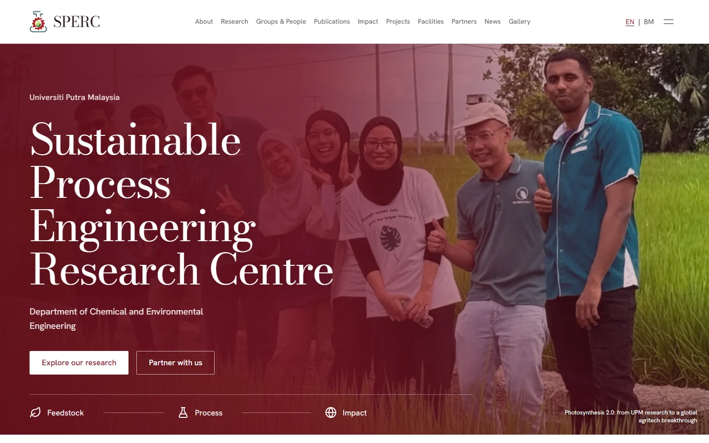
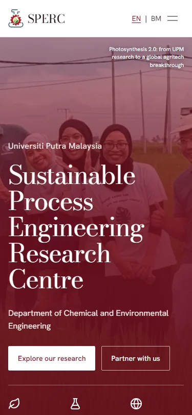

Malaysia · Portfolio edition No. 1Portfolio revised 17 October 2026
06 / Freelance research and data work / Client websites
Two research websites, built from structured evidence.
A research centre and a UPM professor needed different public stories. I built two data-driven websites with searchable records, research diagrams and clear source boundaries, using the same principle: prepare the evidence once, then give it a useful public form.
By Faris Erhan · · 7 minute read
Research data · Cleaning · Visual explanation · Client delivery
A website can make research easier to find, or turn it into another pile of pages. The difference starts before design: what counts as a publication, how a grant is described, which date belongs to a record, and what a diagram is supposed to explain.
I handled this as freelance research and data work. For UPM SPERC, the site needed to explain a centre's breadth. For the personal academic website for a UPM professor, it needed to connect research, public work and an academic record. Both were built with English and Bahasa Malaysia versions.
Two clients. Two front doors.
Client work / two publishing structures
Two publishing structures serve different readers. These local outlines show the content approach; the links open the complete client websites.
Research centre
UPM SPERC
The centre: research groups, publications, projects and impact.
Data-backed pages · English + Bahasa Malaysia · Static build
sperc-upm.github.io/

F.E. / CLIENT WORK

Screenshot of the public site, captured 17 October 2026
I organised publication, grant and other activity records as structured data. The public pages are generated from those sources, rather than maintaining the same numbers independently in several places.
02 / Define
Give each number a scope
The professor site has a broad publication list and a smaller Scopus dataset. The centre has its own deduplicated publication extract. Those counts are inventories of different source scopes, not a comparison of research quality.
03 / Explain
Choose a useful visual form
I rebuilt client research diagrams as responsive SVG: biomass pathways show alternative conversion routes, while connected gears explain related research areas. Motion follows the relationship being described; it does not stand in for a quantity.
04 / Deliver
Build the public reading layer
Astro generates static pages from the records. Search and filters help readers inspect a long list; diagrams help a new visitor understand the research before reading the detail. English and Bahasa Malaysia versions extend that reading layer.
The publishing route
System diagram · Conceptual links, not measured volumes
Click or Enter to pin · Esc to release
Follow the evidence. Focus or select any stage to inspect its role.
Keep the content separate. Let the picture explain it.
Source: project build workflow. Connectors show the route through the work; their width does not encode quantity.
The data desk behind the pages
The following figures redraw selected ideas from the client work in this edition's visual language. Counts come from the current local JSON arrays. The process and mechanism drawings are explicitly schematic.
The centre and professor sites draw on different record scopes
JSON array entries · Source files checked 17 October 2026 · Career inventories
These are records behind the pages, not visitors or impact scores. The professor publication list contains 239 entries; its separate Scopus extract contains 150. The centre metrics ledger labels its 1,357 documents as an all-years Scopus snapshot dated 29 September 2026.
Source: Both sites: src/data/publications.json, grants.json, consultancy.json, ip.json and metrics.json; professor: scopus_publications.json. Verified counts.
Read the data and definitions
Dataset
SPERC records
Professor site records
publications
1357
239
grants
249
45
consultancy
109
31
ip
68
11
“A process diagram explains routes; a chart measures observations.”
My analysis of the visual design choices
The animated figure gallery
Two visual explanations / two different jobs
Each drawing has a source component and a reason to move. Inspect the routes, then turn the research framework. All conclusions remain available with motion reduced.
One feedstock can follow two conversion routes
SPERC / Simplified process diagram · No yields, capacities or flow quantities
Heat uses pyrolysis, gasification or combustion to convert biomass.
The original client component separates thermochemical and biochemical routes. Here, select a route to mute the alternative. Connector widths are decorative and do not imply equal output.
Source: SPERC components/BiomassPathway.astro, labels and route definitions. See the client figure.
Motion should clarify a relationship
The biomass figure lets a reader follow one route without losing the wider system. The professor site uses a different device: linked gears connect energy, materials and a Bio-Nexus. That mechanism is a metaphor for related research areas, not evidence that one area produces more than another.
Three research areas form one connected framework
Professor website / Research concept · A mechanism metaphor, not a measured model
One turn, then still. Reduced motion keeps the drawing static.
The original SVG uses meshing gear geometry and opposite rotation. This editorial redraw makes a single, finite turn on request. The highlighted Bio-Nexus connects energy and materials; no speeds or gear sizes encode research metrics.
Source: Professor site components/GearFramework.astro and ResearchStory.astro. See the client figure.
What this demonstrates
I can take a client's research material from scattered evidence to a useful public interface: structured records, deliberate definitions, searchable outputs and figures that explain the subject. The visual work rests on the data work.
The portfolio includes aggregate counts and redrawn concepts. The underlying client records and private build repositories are not republished.